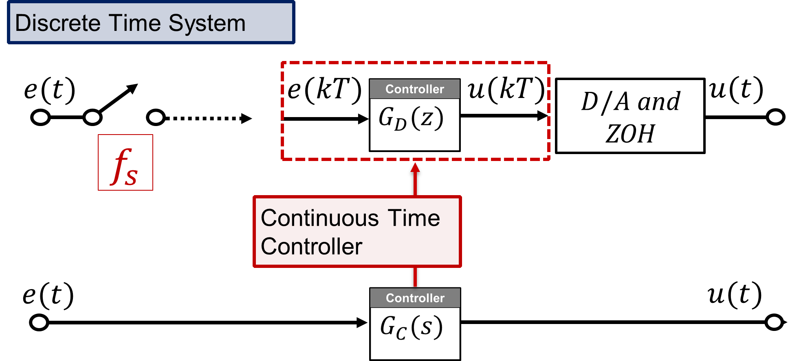

Title Slide
Practical Considerations
Observers and Output Feedback
Dr Guilherme Froes Silva
School of Electrical Engineering & Robotics
Queensland University of Technology
EGH445 - Modern Control
Consultation: GP-S1111
Email: g.froessilva@qut.edu.au
Overview
- Quick recap: State-feedback control and estimation.
- Reality gap: Ideal models vs real-world implementation.
- Noise, constraints, hardware limits, model errors, etc.
- LQR and Kalman Filter tuning.
- Emulation design: digital controllers from continuous ones.
- Implementation: hardware and software.
State-feedback control and estimation
State vs Output Feedback Revisited
State vs Output Feedback Revisited
When and why? Consider the system x(kT+T) = Gx(kT) + Hu(kT), y(kT) = Cx(kT).
System Matrix G = e^{AT} represents the internal dynamics of the system.
- It describes how the state x(kT) evolves over time. Usually inherent to the system.
Input Matrix H = \int_0^T e^{A\tau}B d\tau represents how the input u(kT) affects the state x(kT).
- Relates to the actuator(s) chosen (e.g. types of motors, heaters, valves, etc.).
Output Matrix C represents how the states are measured as outputs y(kT).
- Relates to the sensor(s) chosen (e.g. types and placement of sensors, cameras, etc.).
State feedback: u(kT) = -Kx(kT)
- System (G,H) must be controllable.
- Closed-loop dynamics, G_{cl} = G - HK.
- Assumes all states are available.
- Pole placement: K gain.
- LQR: K gain and cost function Q,R.
- Integral action: Dynamic Extension and K_I gain.
Output feedback: u(kT) = -K\hat{x}(kT)
- System (G,C) must be observable.
- Observer dynamics, G_{obs} = G - LC.
- Used when only y(kT) = Cx(kT) is available.
- y(kT) is what is actually being measured.
- Needs estimating \hat{x}(kT) from y(kT) and u(kT).
- Luenberger Observer - L gain.
- Kalman Filter - K_k gain and noise covariances.
- Practical Question: When is it feasible/necessary to measure all states versus estimate them?
- Sensor cost and complexity (relates to choice of C).
- Sensor availability (some states might be internal/unmeasurable).
Practical Trade-offs
- Observer Performance:
- Luenberger poles determine error convergence speed. Faster poles \rightarrow potentially higher gain L.
- Kalman Filter dynamic gain K_k minimises the estimation error covariance iteratively, balancing model trust vs measurement trust based on noise characteristics (Q, R).
- Noise Amplification:
- Large observer gains (L or K_k) can amplify measurement noise (v(kT)), negatively impacting the control input u(kT) = -K\hat{x}(kT). There’s a trade-off: fast estimation vs noise sensitivity.
- Computational Load:
- Observers add computational cost (matrix multiplications, additions).
- Increase in computational cost: Luenberger observers \rightarrow Kalman filters \rightarrow Extended Kalman filters (EKF).
- Needs to be feasible on the target hardware, considering the selected/needed sampling time T.
- Certainty Equivalence Principle:
- Recall: Controller (K) and Observer (L) can be designed independently.
- This holds perfectly if the model is perfect.
- Model mismatch can affect performance;
- Sometimes detuning the observer (slower poles) can improve robustness in practice.
- Discussion Point: Do the benefits of state estimation outweigh the costs?
Benefits of State Estimation:
- Handling unmeasured states
- Better performance via full state feedback
Costs of State Estimation:
- Added complexity (and computational load)
- Need of tuning
- Sensitivity to noise
- Model mismatch
Depends on the application!
Practical Considerations:
LQR Design
- LQR Fundamentals
Recap: LQR Fundamentals
Goal: Find u(kT) = -Kx(kT) that minimises a quadratic cost function over an infinite horizon.
Cost Function (J): Balances state regulation (Q, state weighting) and control effort (R, control weighting). J = \sum_{k=0}^{\infty} \left( x(kT)^T Q x(kT) + u(kT)^T R u(kT) \right), \quad Q \succeq 0, \quad R \succ 0
Solution: Solve the Discrete Algebraic Riccati Equation (DARE) for a unique, positive semi-definite matrix P: P = G^T P G - (G^T P H)(R + H^T P H)^{-1}(H^T P G) + Q Then the gain is \; K = (R + H^T P H)^{-1} H^T P G.
Stability: The closed-loop system x(kT+T) = (G-HK)x(kT) is guaranteed to be stable if (G, H) is controllable and (G, V) is observable, where Q=V^T V.
Important remark on (G, V) observability
- The matrix V (from Q=V^T V) defines which states or state combinations are penalised in the cost J.
- (G, V) observability ensures that any unstable behaviour will eventually affect the states penalised by Q, forcing the controller to act.
Analogy
C describes the outputs, i.e. what states are measured (through physical sensors).
V describes what states are penalised (design choice in Q).
Analogously to designing controllers assuming full state availability, V and C do not need to be the same.
Tuning Q and R in practice
- Starting Point: Diagonal Matrices
- Often start with diagonal Q and R.
- Q = \text{diag}(q_1, q_2, \dots, q_n): Penalises squared state deviations q_i x_i^2.
- R = \text{diag}(r_1, r_2, \dots, r_m): Penalises squared control inputs r_j u_j^2.
- Relative Weights Matter:
- The absolute values of Q and R don’t matter as much as their ratio. Scaling both Q and R by the same factor results in the same gain K.
- Common practice: Fix one element (e.g., R=1 or R=I) and tune the elements of Q.
- Interpreting Weights:
- Larger q_i means state x_i is more important to regulate quickly/keep small.
- Larger r_j means control input u_j is more “expensive” (e.g., energy consumption, saturation limits).
- Tuning Strategies:
- Bryson’s Rule (Rule of Thumb): Scale weights based on maximum acceptable deviations/inputs:
- q_{ii} \approx \frac{1}{(\text{max acceptable } x_i)^2}, \quad r_{jj} \approx \frac{1}{(\text{max acceptable } u_j)^2}
- Trial and Error (Simulation/Experiment):
- Simulate/run the system.
- Observe states x(kT) and inputs u(kT).
- If states converge too slowly \rightarrow Increase elements in Q relative to R.
- If control effort is too high/saturating \rightarrow Increase elements in R relative to Q.
- Bryson’s Rule (Rule of Thumb): Scale weights based on maximum acceptable deviations/inputs:
- Non-Diagonal Weights:
- Off-diagonal terms in Q can penalise relationships between states (e.g., x_1 x_2).
- Off-diagonal terms in R can penalise simultaneous use of multiple actuators.
- Use only if there’s a clear physical reason; increases tuning complexity.
LQR Limitations Revisited
- Model Accuracy:
- LQR performance relies on an accurate linear model (G, H).
- Nonlinearities or parameter uncertainties can degrade performance or lead to instability.
- Constraint Handling:
- Standard LQR formulation does not explicitly handle constraints on states (x) or inputs (u).
- Example: Actuator saturation (u_{min} \le u(kT) \le u_{max}).
- Calculating gain K and then saturating the control value can lead to poor performance or instability.
- Implicit Pole Placement:
- LQR does place closed-loop poles, but indirectly through the choice of Q and R.
- It’s hard to directly relate Q/R choices to transient response characteristics (like %OS, t_s).
- Addressing Limitations:
- For constraints: Model Predictive Control (MPC) explicitly incorporates constraints in its optimization.
Practical Considerations:
Kalman Filter Design
Regarding assessment of this content
You are not expected to know the mechanics/maths of a Kalman Filter implementation.
You are expected to know what it does, why/when it is useful, and how you tune it.
Recap: KF Fundamentals
Optimal state estimator for linear systems with Gaussian noise.
- System Model with Noise:
\begin{align*}
{x}(kT+T) &= G{x}(kT) + H{u}(kT) + {w}(kT) \\
{y}(kT) &= C{x}(kT) + {v}(kT)
\end{align*}
- {w}(kT): Process noise, Q = E[{w}{w}^T]
- {v}(kT): Measurement noise, R = E[{v}{v}^T]
- Recursive Structure (Predict-Correct):
- Predict: Project state estimate \hat{{x}} and error covariance P forward using the model (G, H, Q).
- \hat{{x}}^-(kT) = G\hat{{x}}(kT-T) + H{u}(kT-T)
- P^-(kT) = G P(kT-T) G^T + Q_{k-1}
- Correct (Update): Adjust prediction using the current measurement {y}(kT) and the calculated Kalman Gain K_k.
- K_k = P^-(kT) C^T (C P^-(kT) C^T + R)^{-1}
- \hat{{x}}(kT) = \hat{{x}}^-(kT) + K_k ({y}(kT) - C\hat{{x}}^-(kT))
- P(kT) = (I - K_k C) P^-(kT)
- Predict: Project state estimate \hat{{x}} and error covariance P forward using the model (G, H, Q).
Key Idea (watch Workshop 10 for a practical example)
K_k optimally balances trusting the model prediction vs. trusting the noisy measurement based on the relative sizes of P^-(kT), Q, and R.
The Tuning Challenge
“Optimal” performance relies on having the correct noise covariance matrices Q and R.
- R – sensor measurement uncertainty (variance).
- Q – dynamics model uncertainty (variance) introduced by, unmodelled forces, discretisation errors, etc.
The Problem: In most real-world applications, the true values of Q and R are unknown.
Consequence: Choosing incorrect Q and R leads to suboptimal state estimates.
If the ratio Q/R is too small, the filter will trust the model too much and ignore useful measurements.
Estimates converge slowly and may drift.
If the ratio Q/R is too large, the filter will trust the measurements too much and ignore the models.
Estimates become noisy.
Therefore: Q and R often become tuning parameters adjusted based on observed filter performance, rather than precisely known quantities.
Tuning Strategies
Choosing R:
R \in \mathbb{R}^{p \times p}, where p is the number of outputs.
Often diagonal, when the sensor noise is uncorrelated.
\scriptsize R_k = \begin{bmatrix} \sigma_{v_1}^2 & 0 & \dots & 0 \\ 0 & \sigma_{v_2}^2 & \dots & 0 \\ \vdots & \vdots & \ddots & \vdots \\ 0 & 0 & \dots & \sigma_{v_p}^2 \end{bmatrix}
Determining values:
- Sensor datasheets: specified noise characteristics.
- Experimental data: calculated variance from samples.
- Cross-correlation: covariance between sensor signals.
Choosing Q:
Q \in \mathbb{R}^{n \times n}, where n is the number of states.
Often diagonal and treated as a tuning parameter. \scriptsize Q_k = \begin{bmatrix} \sigma_{w_1}^2 & 0 & \dots & 0 \\ 0 & \sigma_{w_2}^2 & \dots & 0 \\ \vdots & \vdots & \ddots & \vdots \\ 0 & 0 & \dots & \sigma_{w_n}^2 \end{bmatrix}
Determining values:
- \sigma_{w_i}^2 reflects how much x_i is expected to deviate.
- Physical insight: deviation due real dynamics.
- Iterative tuning: observe residual e(kT).
Kalman Filter Tuning: Residual Analysis
The residual is the difference between the actual measurement and the predicted measurement at each step: {e}(kT) = {y}(kT) - \hat{{y}}^-(kT) = {y}(kT) - C\hat{{x}}^-(kT)
- Theoretical Property: For a perfectly modelled and optimally tuned Kalman filter:
- Zero-mean: E[{e}(kT)] = 0.
- White noise: Uncorrelated over time, E[{e}(kT){e}(jT)^T] = 0 for k \neq j.
- Known Covariance: E[{e}(kT){e}(kT)^T] = C P^-(kT) C^T + R_k.
- Practical Use for Tuning:
- Collect Residuals: Record {e}(kT) over a representative run.
- Check Mean: If it’s significantly non-zero: bias in sensors or in the system model.
- Check Whiteness (Autocorrelation): Plot the autocorrelation function (ACF) of the residuals.
Adjust Q and R iteratively until the residuals “look like” zero-mean white noise with the expected covariance.
Emulation Design:
Digital Controllers from Continuous Ones
Discretising Continuous Controllers
Emulation: Discretising Continuous Controllers
Design a digital controller G_d(z) that mimics the behaviour of a pre-designed continuous controller G_c(s).

Why Emulate?
- Leverage existing continuous controller designs.
- Control design is sometimes preferred in s-domain.
- Implement advanced continuous controllers digitally.
Emulation vs. Direct Design
- Direct design: Discretise the plant, then design the controller directly (e.g., using DLQR)
- Emulation: Design the controller in the continuous domain (e.g., PID, Lead-Lag, LQR) and then discretise it.
Discretisation Methods
How do we convert a continuous controller G_c(s) into a discrete controller G_d(z)?
There are three main methods.
1. Tustin (Bilinear) Transformation
Uses a trapezoidal integration to get to a bilinear relation between s and z (opposed to s=\frac 1 T \ln{(z)}).
2. Zero-Order Hold (ZOH) Equivalence
Assumes the input to the controller e(t) is held constant between samples by a ZOH e(kT+\tau) = e(kT) \text{ for } 0 \le \tau < T
3. Matched Pole-Zero (MPZ) Method
Maps poles and zeros of G_c(s), in the s-plane, to those of G_d(z), in the z-plane, using z = e^{sT}.
Tustin (Bilinear) Transform
Approximates the continuous-time integration operator 1/s with a discrete-time equivalent derived from the trapezoidal rule for numerical integration.
u(kT) = \int e(t) dt \quad \rightarrow \quad u(kT) \approx u(kT-T) + \frac{T}{2}(e(kT) + e(kT-T)).
Taking the z-transform of both sides gives: \begin{align*} U(z) &= z^{-1}U(z) + \frac{T}{2} \left( E(z) + z^{-1} E(z) \right) \\ \frac{U(z)}{E(z)} &= \frac{T}{2} \frac{\left( 1 + z^{-1} \right)}{\left(1 - z^{-1}\right)} \\ \end{align*}
Transformation Rule
To convert G_c(s) to G_d(z), substitute s in G_c(s) with: s \leftarrow \frac{2}{T} \frac{z-1}{z+1}, \quad \text{that is, } \quad G_d(z) = G_c\left(\frac{2}{T} \frac{z-1}{z+1}\right).
Tustin (Bilinear) Transform Properties
- Maps the left-half of the s-plane entirely into the unit circle in the z-plane.
- Maps the j\omega axis of the s-plane onto the unit circle |z|=1 in the z-plane.
- This preserves stability: a stable G_c(s) will result in a stable G_d(z).
MATLAB: c2d(Gc, T, 'tustin').
Python: scipy.signal.cont2discrete(Gc, dt=T, method='bilinear').
Zero-Order Hold (ZOH) Equivalence
Assumes the input e(t) to the controller is held constant by a Zero-Order Hold (ZOH) for one sampling period T.
- The sampler and ZOH are placed before the continuous controller G_c(s).
- The continuous controller sees a staircase input e(t) = e(kT) for kT \le t < kT+T.
- The result is z-transformed to get the discrete controller G_d(z).
ZOH Transfer Function: G_{zoh}(s) = \frac{1}{s} (1 - e^{-sT}). Positive step at kT minus negative step at kT+T.
Transformation Rule
The pulse transfer function G_d(z) of the discretised controller is given by:
G_d(z) = \mathcal{Z}\left\{ \mathcal{L}^{-1}\left[ \frac{1-e^{-sT}}{s} G_c(s) \right] \right\} = (1-z^{-1}) \mathcal{Z}\left\{\frac{G_c(s)}{s}\right\}
ZOH Equivalence Properties
- The ZOH method exactly matches the response of the continuous and discrete systems at the sampling instants if the input to G_c(s) were indeed staircase (due to the ZOH).
- Stability is preserved if G_c(s) is stable.
MATLAB: c2d(Gc, T, 'zoh').
Python: scipy.signal.cont2discrete(Gc, dt=T, method='zoh').
Matched Pole-Zero (MPZ) Method
Preserves the locations of poles/zeros by mapping them directly using the fundamental relationship z = e^{sT}.
1. Map Poles and Zeros:
- Map poles and zeros of G_c(s) to poles and zeros of G_d(z) using the relationship z = e^{s T}.
- Form the basic structure: G_d(z) = K_d \frac{\prod (z - z_{z_j})}{\prod (z - z_{p_i})}.
2. Adjust Numerator Order (Add Zeros at z=-1):
- To match phase characteristics, zeros at z=-1 (Nyquist frequency) are added to the numerator until its order is equal to or one less than the denominator’s order.
- This helps average/smooth the input, similar to Tustin’s trapezoidal rule effect.
3. Match DC Gain:
- Adjust K_d so that the DC gain of G_d(z) (at z=1) matches the DC gain of G_c(s) (at s=0).
Matched Pole-Zero Method: Properties
Stability Preservation:
- The poles are mapped such that |z| = |e^{sT}| = e^{Re(s)T} < 1, preserving the stability of G_c(s).
Frequency Response:
- The matching of DC gain ensures that the low-frequency response of G_d(z) is similar to G_c(s).
- Comparison to Other Methods:
- Tustin: Generally better overall frequency response approximation.
- ZOH: Exact at sampling instants if the input is staircase. Can introduce phase lag.
- MPZ: Good for preserving specific pole/zero locations and DC gain. Often used when the locations of dominant poles/zeros are critical.
MATLAB function: c2d(Gc, T, 'matched') or c2d(Gc, T, 'mpz').
Python function: control.TransferFunction(num, den).sample(T, 'matched').
Example: Discretising a Continuous Controller
Continuous-Time System (Mass-Spring-Damper):
- State-space model: \begin{align*} \dot{x} &= \begin{bmatrix} 0 & 1 \\ -1 & -2 \end{bmatrix} x(t) + \begin{bmatrix} 0 \\ 1 \end{bmatrix} u(t) \\ y(t) &= \begin{bmatrix} 1 & 0 \end{bmatrix} x(t) \end{align*}
Continuous-Time Lead Controller G_c(s): G_c(s) = K \frac{s+a}{s+b} = 2.8 \frac{s+2}{s+4} Pre-designed controller for the continuous system.
Task: Find the discrete-time controller G_d(z)
- Task: Find the equivalent discrete-time controller G_d(z) using:
- Tustin (Bilinear) Transform
- Zero-Order Hold (ZOH) Equivalence
- Matched Pole-Zero (MPZ) Method
- We will consider two sampling times:
- Part A: T = 1.0 second
- Part B: T = 0.1 second
And compare their performance when controlling the continuous plant.
Example Part A: Tustin Method (T=1.0s)
Continuous Lead Controller: G_c(s) = 2.8 \frac{s+2}{s+4}
Sampling Time: T=1.0 second.
Tustin Transformation Rule: Substitute s \leftarrow \frac{2}{T}\frac{z-1}{z+1} = \frac{2(z-1)}{z+1} (since T=1) into G_c(s).
\begin{align*} G_d(z) &= 2.8 \left( \frac{ \frac{2(z-1)}{z+1} + 2 }{ \frac{2(z-1)}{z+1} + 4 } \right) \\ &= 2.8 \left( \frac{ 2(z-1) + 2(z+1) }{ 2(z-1) + 4(z+1) } \right) \quad \text{(Multiply num/den by }(z+1)\text{)} \\ &= 2.8 \left( \frac{ 2z - 2 + 2z + 2 }{ 2z - 2 + 4z + 4 } \right) \\ &= 2.8 \left( \frac{ 4z }{ 6z + 2 } \right) = 2.8 \left( \frac{ 2z }{ 3z + 1 } \right)= \frac{5.6z}{3z+1} = \frac{1.8667z}{z+0.3333} \end{align*}
Example Part A: ZOH Method (T=1.0s)
Continuous Lead Controller: G_c(s) = 2.8 \frac{s+2}{s+4}
Sampling Time: T=1.0 second.
ZOH Transformation Rule: G_d(z) = (1-z^{-1}) \mathcal{Z}\left\{\frac{G_c(s)}{s}\right\}
Step 1: Find \frac{G_c(s)}{s} \frac{G_c(s)}{s} = 2.8 \frac{s+2}{s(s+4)} Using partial fraction expansion: \frac{s+2}{s(s+4)} = \frac{A}{s} + \frac{B}{s+4} = \frac{0.5}{s} + \frac{0.5}{s+4} So, \frac{G_c(s)}{s} = 2.8 \left( \frac{0.5}{s} + \frac{0.5}{s+4} \right) = \frac{1.4}{s} + \frac{1.4}{s+4}.
- Step 2: Find \mathcal{Z}\left\{\frac{G_c(s)}{s}\right\}
- \mathcal{Z}\left\{\frac{1.4}{s}\right\} = 1.4 \frac{z}{z-1}
- \mathcal{Z}\left\{\frac{1.4}{s+4}\right\} = 1.4 \frac{z}{z-e^{-4T}} = 1.4 \frac{z}{z-e^{-4}} (since T=1)
- So, \mathcal{Z}\left\{\frac{G_c(s)}{s}\right\} = 1.4 \left( \frac{z}{z-1} + \frac{z}{z-e^{-4}} \right).
- Step 3: Calculate G_d(z) \begin{align*} G_d(z) &= \frac{z-1}{z} \cdot 1.4 \left( \frac{z}{z-1} + \frac{z}{z-e^{-4}} \right) \\ &= 1.4 \left( 1 + \frac{z-1}{z-e^{-4}} \right) = 1.4 \left( \frac{z-e^{-4} + z-1}{z-e^{-4}} \right) \\ &= 1.4 \frac{2z - (1+e^{-4})}{z-e^{-4}} = \frac{2.8z - 1.4256}{z - 0.0183} \end{align*}

- Marginally stable
- Oscillatory behaviour
Example Part A: MPZ Method (T=1.0s)
- Continuous Lead Controller: G_c(s) = 2.8 \frac{s+2}{s+4}
- Sampling Time: T=1.0 second.
- Map Poles and Zeros:
- Zero of G_c(s): s_z = -2 \implies z_z = e^{-2T} = e^{-2} \approx 0.1353.
- Pole of G_c(s): s_p = -4 \implies z_p = e^{-4T} = e^{-4} \approx 0.0183.
- Basic structure: G_d(z) = K_d' \frac{z - e^{-2}}{z - e^{-4}}.
- Adjust Numerator Order:
- The numerator and denominator are already of the same order (both first order). No additional zeros at z=-1 are needed in this case.
- Match DC Gain:
- DC gain of G_c(s): \lim_{s \to 0} 2.8 \frac{s+2}{s+4} = 2.8 \frac{2}{4} = 1.4.
- DC gain of G_d(z): \lim_{z \to 1} K_d' \frac{z - e^{-2}}{z - e^{-4}} = K_d' \frac{1 - e^{-2}}{1 - e^{-4}}.
- Equating: K_d' \frac{1 - e^{-2}}{1 - e^{-4}} = 1.4.
- K_d' = 1.4 \frac{1 - e^{-4}}{1 - e^{-2}} = 1.4 \frac{1 - 0.018316}{1 - 0.135335} \approx 1.5895.
- So, G_d(z) = 1.5895 \frac{z - 0.1353}{z - 0.0183} = \frac{1.5895z - 0.2151}{z - 0.0183}.
- Stable
- Poor performance
Comparison T=1.0s and T=0.1s
Thank you.